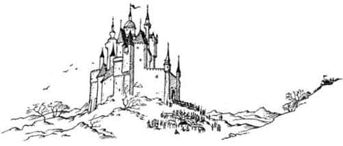
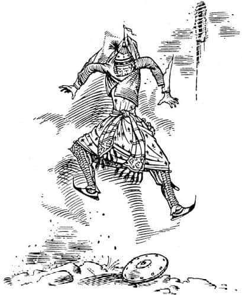
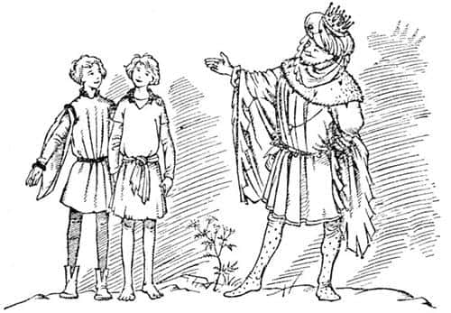

Anvard’daki Savaş
Saat on bire doğru tüm ordu, dağları sol yanına almış, batıya doğru yürüyordu. Corin ve Shasta en geride, hemen önlerinde devler, yürüyorlardı. Lucy, Edmund ve Peridan savaş planları yapmakla meşguldüler. Bir ara Lucy, “Yaramaz Ekselansları nerede?” demesine karşın Edmund, “Önde değil, böylesi daha iyi. Hiç karıştırma” demekle yetinmişti.
Shasta, Corin’e maceralarının birçoğunu anlattı. Ata binmeyi bir attan öğrendiğini, gerçekte dizginleri kullanmayı bilmediğini açıkladı. Corin ona dizginleri nasıl kullanacağını ve bunun yanı sıra Tashbaan’dan gizlice kaçışlarını anlattı.
“Kraliçe Susan nerede?”
“Cair Paravel’de” dedi Corin. “O, Lucy gibi biri ya da en azından bir oğlan gibi değildir. Kraliçe Susan, sıradan yetişkin bir bayan gibidir. Mükemmel bir okçu olmasına karşın savaşa gitmez.”
Yamaçta takip ettikleri patika gittikçe daraldı ve sağ taraflarındaki eğim daha da dikleşti. Sonunda uçurumun kenarında tek sıra halinde ilerlemeye başladılar. Shasta, aynı yürüyüşü dün gece bilmeden yaptığını düşünerek ürperdi. “Kuşkusuz” diye düşündü, “oldukça emniyetteydim. Aslan, bunun için sol tarafımda yürüdü. Hep benimle uçurumun kenarı arasındaydı.”
Sonra patika sola, güneye döndü, uçurumdan uzaklaştı. Şimdi her iki yanda da sık ormanlıklar vardı. Dik yokuştan yukarıya, geçide doğru tırmandılar. Eğer etrafları açık olsaydı tepeden şahane bir manzara görebilirlerdi, ama o ağaçların arasında bir şey görülmüyordu – sadece arada sırada, ağaçların tepesinden bir kayanın sivri ucu ve yukarıda mavi gökyüzünde kanat çırpan bir-iki kartal görülmekteydi.
“Savaş kokusu aldılar” dedi Corin, kuşları işaret ederek. “Onlara ziyafet hazırladığımızı biliyorlar.”
Shasta bunu hiç sevmedi.
Geçidin zirvesini aşıp epeyce aşağıya indiklerinde daha açık alanlara ulaştılar. Shasta buradan, aşağıda uzanan, mavi bir pusla kaplı tüm Archenland’ı ve onun ötesindeki çölü bile (öyle sanıyordu) görebiliyordu. Ne var ki, iki saate kadar batacak olan güneş gözlerine vuruyor, her şeyi net olarak seçemiyordu.
Burada ordu durdu, tek hat halinde yayıldı ve savaş düzeni için hazırlıklar başladı. Shasta’nın daha önce fark etmediği, tehlikeli olduğu anlaşılan, genellikle kedi cinsinden, konuşan hayvanların bulunduğu (leoparlar, panterler ve bunun gibileri) bir müfreze, sol baştaki yerlerini almak üzere kükreyerek yürüdüler.
Sağ tarafta görevlendirilen devler, yerlerini almadan önce, sırtlarında taşıdıkları bir şeyleri çıkarıp bir an için yere oturdular. Shasta o zaman, devlerin taşıdığı şeylerin, şimdi de giymekte oldukları ürkütücü, ağır, çivilerle kaplı çizmeler olduğunu gördü. Sonra kocaman sopalarını omuzlarına koydular ve savaş yerlerine gittiler. Kraliçe Lucy ve okçular geride kaldılar. Onların yaylarını eğmelerini ve kirişlerini sınarken çıkan tın tın seslerini işitebiliyordunuz. Her tarafta, atların kolanlarını sıkan, miğferlerini giyen, kılıçlarını çeken ve pelerinlerini yere atan insanlar görülüyordu. Neredeyse kimse konuşmuyordu artık. Her şey çok ciddi ve korkutucuydu. “Başım belada. Şimdi, gerçekten belada” diye düşündü Shasta. Sonra uzaklardan gürültüler geldi: Birçok adamın bağırtıları ve güm-güm-güm sesleri.
“Kütükler” diye fısıldadı Corin. “Kapıları kütükle dövüyorlar.”
Şimdi Corin bile çok ciddi görünüyordu.
“Kral Edmund niye saldırmıyor?”dedi Corin. “Bu halde beklemeye dayanamıyorum. Üstelik de soğuk.”
Shasta ne kadar korktuğunu belli etmemeye çalışarak başını salladı.
Sonunda borular! Harekete geçmişlerdi artık, – tırıs gidiyorlardı şimdi – sancak rüzgârda dalgalanıyordu. Şimdi küçük bir sırtın tepesine gelmişlerdi. Aşağıdaki bütün manzara gözlerinin önüne serilmişti: Kapısı tam karşılarında, birçok kulesi olan küçük bir kale. Ne yazık ki kalenin etrafında su hendeği yoktu. Ancak kapılar kapanmış, demir parmaklıklar indirilmişti. Duvarların üstünde, küçük beyaz noktacıklar gibi, savunanların yüzlerini görebiliyorlardı. Aşağıda, atlarından inmiş yaklaşık elli Calormenli büyük bir ağaç kütüğünü sürekli kapıya vuruyorlardı. Fakat görüntü hemen değişti. Rabadash’ın adamlarının büyük bir bölümü kapıya saldırmak için atlarından inmişler, o anda da sırttan aşağıya doğru yayılmış Narnialıları görmüşlerdi. Calormenlilerin çok iyi eğitildiğine hiç kuşku yoktu. Shasta, bütün bir düşman kolunun atlarına binip, önlerini kesmek için harekete geçmelerinin, sanki bir saniye sürdüğünü düşündü.

İşte şimdi dörtnala… İki ordu arasındaki mesafe her an azalıyordu. Hızlı, daha hızlı… Bütün kılıçlar çekilmiş, kalkanlar burun hizasında tutulmuş, tüm dualar edilmiş, dişler sıkılmıştı. Shasta çok fena korkuyordu. Fakat aniden beyninde bir şimşek çaktı: “Bundan korkarsan, tüm yaşamın boyunca her kavgadan korkarsın. Ya şimdi ya da asla!”
Ne var ki önünde sonunda iki kol karşı karşıya geldiğinde, neler olacağı üstüne aslında çok az fikri vardı.
Müthiş bir karmaşa ve korkunç bir gürültü oldu. Çok geçmeden kılıcını elinden düşürdüler. Ne olduysa, dizginleri de karıştırmıştı. Attan düşmek üzereydi. O anda kendisini hedef alan bir oktan sakınmak için eğildiğinde attan düştü, elini başka birinin zırhına çarptı ve sonra—
Fakat savaşı Shasta’nın bakış açısından anlatmanın hiçbir faydası yok; genel olarak savaşı ve savaştaki payını çok az anlıyordu. Size gerçekten olanları anlatabilmemin en iyi yolu, sizi, güneydeki sınırların münzevisinin, Aravis, Bree ve Hwin’le birlikte oturup seyrettiği, büyük ağacın altındaki durgun havuza götürmektir. Çünkü Münzevi, bu inziva yerinin yeşil duvarları dışında kalan dünyada neler olduğunu öğrenmek istediğinde bu havuza bakardı. Orada, belirli zamanlarda, Tashbaan’ın güneyinde kalan şehirlerin sokaklarında olan bitenleri, uzaklardaki Yedi Adalar’da bulunan Redhaven’a hangi gemilerin geldiğini, Lamba Toprakları ile Telmar arasındaki Batı Ormanları’nda hangi vahşi hayvanların ve haydutların olduğunu görebilirdi.
Ve bugün havuz başından, yemek yemek ya da bir şeyler içmek için dahi ayrılmamıştı. Çünkü Archenland’da büyük olayların çıkmak üzere olduğunu biliyordu. Aravis ve atlar da havuza bakmaktaydı. Bunun büyülü bir havuz olduğunu görebiliyorlardı. Havuzun derinliklerinde ağacın ve gökyüzünün yansıması değil, hareket eden, ama sürekli hareket eden puslu ve renkli şekiller görünüyordu. Onlar hiçbir şeyi açıkça göremiyorlardı, ama Münzevi görebiliyordu. Arada bir onlara neler olup bittiğini anlatıyordu. Shasta ilk savaşına girmeden önce Münzevi şunları anlatmaya başlamıştı:
“Fırtına Burnu’nun yanındaki boşlukta, daireler çizen bir-iki-üç kartal görüyorum. Biri, dünyadaki kartalların en yaşlısı. Savaş yakın olmasaydı o uçuyor olmazdı. Bazen Anvard’a, bazen de doğuya, Fırtına Burnu’nun arkasına bakarak ileri geri uçtuğunu görüyorum. Ah – şimdi Rabadash ve adamlarının bütün gün neyle meşgul olduklarını görebiliyorum. Büyük bir ağacı kesip budamışlar ve kapıyı kırmak için kullanmak üzere, şimdi ormandan çıkıyorlar. Dün geceki başarısız saldırıdan ders almışlar. Rabadash, adamlarını merdiven yapmaya gönderseydi daha akıllıca olurdu. Fakat bu çok uzun zaman alır ve Rabadash çok sabırsız. Ne kadar aptal! İlk saldırı başarısızlığa uğradıktan sonra hemen Tashbaan’a geri dönmeliydi, çünkü bütün planı sürat ve baskına dayanıyordu. Şimdi kütüğü getiriyorlar. Kral Lune’un adamları duvarlardan sürüyle ok atıyorlar. Beş Calormenli öldü ama çok fazla adam ölmeyecek. Kalkanlarını başlarının üzerine koydular. Rabadash şimdi emirler veriyor. Yanında en güvendiği beyler, doğu eyaletlerinden gelen gaddar Tarkaanlar var. Yüzlerini görebiliyorum. Tormunt Kalesi’nden Corradin, Azrooh ve Chlamash, buruk dudaklı Ilgamuth ve kırmızı sakallı, uzun boylu bir Tarkaan—”
“Yelenin aşkına, eski sahibim Anradin!” dedi Bree.
“Şişşt” dedi Aravis.
“Şimdi kapıya vurmaya başladılar. Kim bilir ne gürültü koparıyordur bu. Keşke görebildiğim kadar iyi duyabilseydim. Vuruş arkasından vuruş. Hiçbir kapı sonsuza kadar dayanamaz buna. Ama durun! Fırtına Burnu’ndaki bir şeyler kuşları korkuttu. Sürüler halinde geliyorlar. Bakın yine… Henüz göremiyorum… Ah! Şimdi görebiliyorum. Doğudaki dağın tüm sırtı kapkara süvarilerle kaplı. Rüzgâr esse de, şu sancağı bir dalgalandırsa. Her kimlerse, şimdi sırtı aştılar. Hah! Sancağı şimdi gördüm. Narnia, Narnia! Kırmızı Aslan bu. Son hızla tepeden aşağı iniyorlar şimdi. Kral Edmund’u görebiliyorum. Arkada okçular arasında bir kadın var. Oh!—”
“Ne var?” diye sordu Hwin nefesini tutup.
“Safların sol yanından bütün kediler hızla koşuyorlar.”
“Kediler mi?” dedi Aravis.
“Büyük kediler, leoparlar ve onun gibileri” dedi Münzevi sabırsızca. “Anladım, anladım. Kediler, atlarından inmiş süvarilerin atlarına saldırmak için etraflarında daire çiziyorlar. İyi bir darbe. Calormen atları şimdiden korkudan çıldırdılar. Kediler şimdi onların arasında. Fakat Rabadash yeniden saflarını topladı. Şimdi at üstünde yüz tane adam var. Narnialıları karşılamaya gidiyorlar. İki kol arasında sadece yüz metre var şimdi. Sadece elli. Kral Edmund’u görebiliyorum, Lord Peridan’ı görebiliyorum. Narnia saflarında iki de çocuk var. Kral, onların savaşmasına neden izin veriyor acaba? Sadece on metre – saflar buluştu. Narnialıların sağındaki devler harikalar yaratıyorlar… fakat biri vuruldu… sanırım gözünden vuruldu. Ortadaki bölüm tamamen karmakarışık. Sol tarafta da karmaşa var. Yine o iki çocuğu görüyorum. Aslan’ın ömrü için! Birisi Prens Corin. Diğeri de burnundan düşmüş gibi ona benziyor. Bu sizin küçük Shasta. Corin, bir adam gibi dövüşüyor. Bir Calormenli öldürdü. Şimdi safların ortasını biraz görebiliyorum. Rabadash ve Edmund karşılaşmak üzereydiler, ama kalabalık onları ayırdı—”
“Shasta’ya ne oldu?” dedi Aravis.
“Oh aptal!” diye inledi Münzevi. “Zavallı cesur, küçük aptal. Bu iş hakkında bir şey bilmiyor. Kalkanını hiç kullanmıyor. Bir yanı tamamen açıkta. Kılıcıyla ne yapacağı hakkında en ufak bir fikri yok. Ah, şimdi hatırladı. Çılgınca sallıyor kılıcı . . . neredeyse kendi atının başını kesiyordu. Dikkatli olmazsa, az sonra kesecek. Şimdi kılıcı elinden düşürüldü. Bir çocuğu savaşa sokmak cinayetten başka bir şey değil; beş dakikadan fazla yaşayamaz. Eğil budala – ah, yere düştü.”
“Öldü mü?” diye sordular üçü birden nefes nefese.
“Nereden bileyim ki?” dedi Münzevi. “Kediler işlerini bitirdiler. Artık binicisi olmayan atların kimisi öldü kimisi de kaçtı: Calormenliler kaçmak için onları kullanamazlar artık. Kediler asıl şimdi savaşa katılıyorlar. Kütüğü taşıyan adamların üzerine atlıyorlar. Kütüğü düşürdüler. Oh, iyi! İyi! Kapıları içeriden açıyorlar. Bir yarma harekâtı olacak. İlk üç kişi dışarıya çıktı. Ortada Kral Lune var, Dar ve Darrin kardeşler onun iki yanında. Arkalarında Tran, Shar, Cole ve kardeşi Colin var. Şimdi, on-yirmi, hatta otuzu dışarıya çıktı. Calormen safları onlara doğru geri çekilmeye zorlanıyor şimdi. Kral Edmund olağanüstü darbeler indiriyor. Az önce Corradin’in kafasını uçurdu. Birçok Calormenli silahlarını attı ve ormana doğru kaçıyor. Kalanlar zor durumda. Devler sağ taraftan – kediler soldan ve Kral Lune da arkalarından yaklaşıyorlar. Calormenliler sırt sırta çarpışan küçük bir düğüm oldular. Senin Tarkaanın düştü, Bree. Lune ve Azrooh göğüs göğüse çarpışıyorlar; Kral kazanıyor gibi görünüyor – Kral iyi dayanıyor – Kral kazandı. Azrooh düştü. Kral Edmund düştü, hayır yeniden ayağa kalktı; Rabadash’la dövüşüyor. Kalenin kapılarında savaşıyorlar. Birçok Calormenli teslim oldu. Darrin, Ilgamuth’u öldürdü. Rabadash’a ne olduğunu göremiyorum. Kalenin duvarına dayanmış, sanırım ölmüş ama bilmiyorum. Chlamash’la Kral Edmund hâlâ dövüşüyor, fakat başka her yerde savaş sona erdi. Chlamash teslim oldu. Savaş sona erdi. Calormenliler tamamen yenildiler.”
Shasta, atından düştüğünde her şeyin bittiğini sanmıştı. Fakat atlar, insanları savaşta bile, sizin düşündüğünüzden çok daha az çiğnerler. Çok korkunç bir on dakikadan sonra Shasta artık hemen yakınında tepinen atların olmadığını gördü ve seslerin (çünkü sesler hâlâ devam ediyordu) artık dövüş sesleri olmadığını anladı. Oturup etrafına bakındı. Savaş hakkında pek bilgisi olmamasına karşın, o bile kısa bir süre sonra, Archenland ve Narnialıların kazandığını görebiliyordu. Anladığı kadarıyla, yaşayan Calormenlilerin hepsi esir alınmıştı. Kalenin kapıları sonuna kadar açıktı ve Kral Lune ile Kral Edmund kütüğün üzerinde el sıkışıyorlardı. Çevrelerindeki lordlar ve savaşçılar çemberinden, heyecanlı ve soluk soluğa, ama neşeli sesler yükselmekteydi. Ve sonra birden bütün sesler birleşip büyük bir kahkaha tufanına dönüştü.
Shasta, her tarafı alışkın olmadığı bir şekilde tutulmuş olmasına karşın kendini toparladı ve şakanın ne olduğunu görmek için sesin geldiği yere doğru koştu. Çok tuhaf bir görüntü gözüne çarptı. Talihsiz Rabadash, sanki kalenin duvarlarında asılmış gibi görünüyordu. Yerden yaklaşık altmış santim yüksekteki ayakları çılgınca sallanıyordu. Zincirden yapılmış zırhı, kollarının hemen altında kıskaç oluşturmuş, yüzünün yarısını örtmüş haldeydi. Aslında kendisine çok küçük gelen, sanki kolalanmış bir tişört giyerken yakaladığınız bir adam gibi görünüyordu. Sonradan anlaşılabildiği kadarıyla (ve emin olun ki bu hikâye günlerce tekrar tekrar anlatıldı) olanlar şöyleydi: Savaşın ilk anlarında, devlerden birisi çivili çizmeleriyle Rabadash’ı ezmek için başarısız bir girişimde bulunmuştu. Başarısızdı çünkü dev, Rabadash’ı istediği gibi ezememişti. Ancak bu, tamamen de yararsız değildi çünkü çivilerden birisi, sanki sizin ya da benim, sıradan bir gömleği yırtmamız gibi zincirli zırhı yırtmıştı. Böylece, Edmund’la kapıda karşılaştığı anda, Rabadash’ın zırhının yeleğinde bir delik zaten vardı. Ve Edmund onu gitgide duvara doğru sıkıştırırken, bir basamağın üzerine sıçramış ve orada durarak Edmund’a yukarıdan darbeler indirmeye başlamıştı. Fakat herkesin baş hizasından yüksekte olduğunu; bu durumun da kendisini, her Narnia okçusunun bir hedefi haline getirdiğini anlayarak yeniden aşağıya atlamaya karar vermişti. “Tash’ın yıldırımları yukarıdan gelir” diye nara atarak atlarken müthiş heybetli ve korkunç görünmeyi amaçlamış, sesini duyurmak istemişti – kuşkusuz bir an için öyle görünmüştü. Fakat önündeki kalabalık o yönde ona boş bir yer bırakmadığı için, yana atlamak zorunda kalmıştı. Ve arzu edebileceğiniz en şık bir biçimde yeleğinin arkasındaki yırtık, duvardaki bir çengele takılmıştı! (Yıllar önce bu çengelin atları bağlamak için bir halkası vardı.) Ve kendisini orada, kurumaya asılmış bir çamaşır gibi, herkes ona gülerken bulmuştu.

“İndir beni buradan Edmund” diye uludu Rabadash. “İndir ve benimle bir kral ve erkek gibi dövüş; ya da bunu yapmayacak kadar ödleksen hemen öldür beni.”
“Elbette” diye söze girdi Kral Edmund, fakat Kral Lune sözünü kesti.
“Majestelerinin izniyle” dedi Kral Lune, Edmund’a. “Öyle yapmayalım.” Sonra Rabadash’a dönerek dedi ki, “Ekselansları bir hafta önce böyle meydan okusaydı, benim cevabım, Kral Edmund’un hükümranlığı altındaki topraklarda, Ulu Kral’dan küçücük konuşan fareye kadar hiç kimsenin bunu reddetmeyeceği olurdu. Fakat bizler barış halindeyken, Anvard’daki kalemize savaş ilan etmeden saldıran sen, değil bir şövalye, şerefli biriyle kılıç tokuşturmaktan daha çok, cellat tarafından kırbaçlanması gereken bir hain olduğunu ispatladın. İndirin onu ve bağlayın. Ne istediğimizi açıklayana kadar içeri atın.”

Güçlü eller Rabadash’ın elini bükerek kılıcını aldılar. Rabadash bağırıp çağırarak, tehditler savurup küfrederek ve hatta ağlayarak kalenin içine götürüldü. İşkenceye dayanabilirdi ama gülünç olmaya asla. Tashbaan’da herkes onu her zaman ciddiye alırdı.
O anda Corin koşarak Shasta’nın yanına geldi, elinden tutup onu Kral Lune’a doğru sürüklemeye başladı. “İşte o baba, işte o.”
“Evet, sonunda sen de buradasın” dedi Kral ters bir sesle. “Ve emirlerimin tamamen aksine savaşa da katılmışsın. Babasının kalbini kıran bir çocuk! Bu yaşında, kıçına vurulacak bir sopa, eline verilecek bir kılıçtan daha uygun olurdu, ha!” Fakat Corin dahil herkes, kralın onunla gurur duyduğunu görebiliyordu.
“Sör, arzunuz bilir ama daha fazla azarlamayın onu” dedi Lord Darrin. Ekselansları sizin davranışlarınızı miras almasaydı sizin oğlunuz olmazdı. Eğer Corin bunun aksine davranışlar için azarlansaydı, bu, siz Majestelerine ıstırap verirdi.”
“Peki, peki” diye homurdandı Kral. “Bu kez görmemezlikten geleceğiz. Ve şimdi—”
Bundan sonra olanlar, Shasta’yı, hayatı boyunca başına gelen her şeyden daha çok şaşırttı. Kendisini aniden Kral Lune tarafından sımsıkı kucaklanıp iki yanağından öpülürken buldu. Sonra Kral onu yeniden yere bıraktı ve “Çocuklar, burada yan yana durun ve tüm saray sizi görsün. Başlarınızı dik tutun. Beyler, şimdi ikisine de bakın. Hiç kimsenin şüphesi var mı?” dedi.
Ve Shasta, herkesin niçin Corin’le kendisine baktığını ve tüm o alkışların nedenini hâlâ anlayamıyordu.